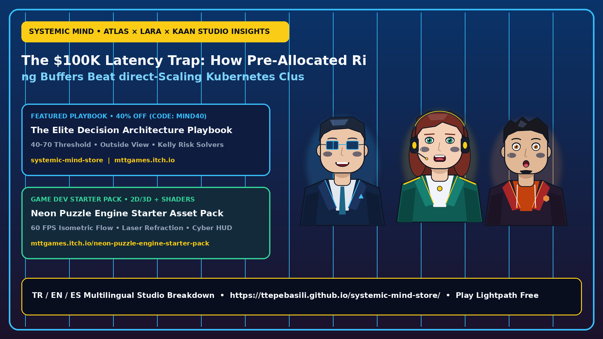

The $100K Latency Trap: How Pre-Allocated Ring Buffers Beat direct-Scaling Kubernetes Clusters — Atlas, Lara ve Kaan ile Mimari Derinlik Analizi

Bu bölümde stüdyo ekibimiz Atlas (Analitik Sistem Mimarı), Lara (Meraklı Araştırmacı) ve Kaan (Stres Testi & Ters Köşe Uzmanı) ile The $100K Latency Trap: How Pre-Allocated Ring Buffers Beat direct-Scaling Kubernetes Clusters konusunun perde arkasındaki gerçek mühendislik dengelerini inceledik.
1. Görünmez Darboğazları Erken Yakalamak
Ortalama gecikme değerleri sağlıklı görünürken bile %99 kuyruk diliminde biriken bellek tahsisleri sistemin gerçek kapasitesini eritir. Sabit boyutlu halka tamponlar (ring buffers) ve sıfır kopya veri akışı, hem sunucu faturasını düşürür hem de 60 FPS kare sürekliliğini korur.
Studio Dialogue Highlights
- Atlas: Your auto-scaling Kubernetes cluster is burning $100,000 annually just to chase its own tail. By relying on dynamic resource allocation instead of pre-allocated ring buffers, you’ve turned every micro-burst of traffic into a catastrophic system-wide latency bottleneck.
- Lara: Wait, Atlas. Are you suggesting that the industry-standard way of handling scale—just 'adding more pods'—is actually the structural weakness killing our performance budget? It sounds counter-intuitive.
- Kaan: It’s definitely counter-intuitive, Lara. But look at the math: while K8s is busy negotiating with the cloud provider to provision a new node, your buffer overflow is already triggering garbage collection spikes. It’s like hiring a plumber while your house is underwater.
- Atlas: Exactly, Kaan. We prioritize 'elasticity' over 'determinism'. In high-frequency systems, non-deterministic latency is death. A pre-allocated ring buffer provides a fixed-memory footprint that bypasses the heap allocator entirely during critical path processing.
- Lara: So, instead of asking for more memory when the storm hits, we keep a massive, static pool ready to go? Isn't that just 'over-provisioning' with a fancier name?
- Kaan: It’s not just over-provisioning; it’s resource-sovereignty. If I control the memory block, I avoid the OS kernel scheduler’s mood swings. That’s where the micro-latency hides.
2. Karar Mimarisi ve Uygulamalı Kaynaklar
Mühendislik ve oyun geliştirme projelerinizde bu prensipleri doğrudan uygulamak için doğrulanan iki temel kaynak paketimizi aşağıdan inceleyebilirsiniz: